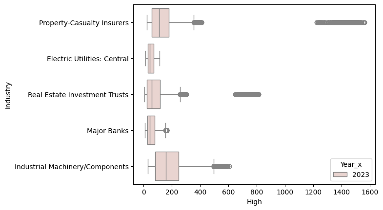
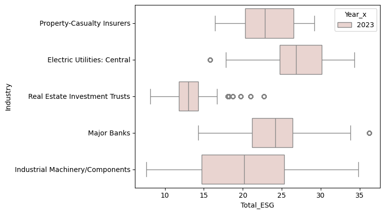
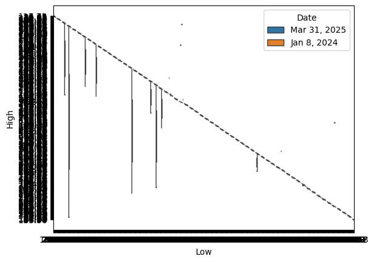
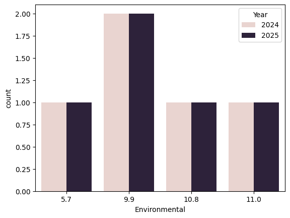
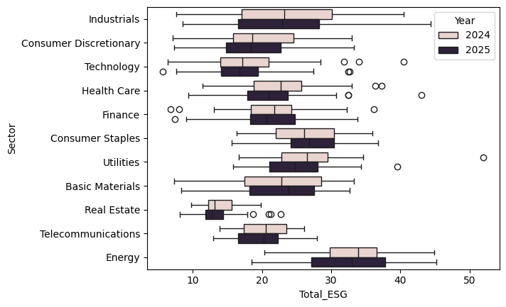
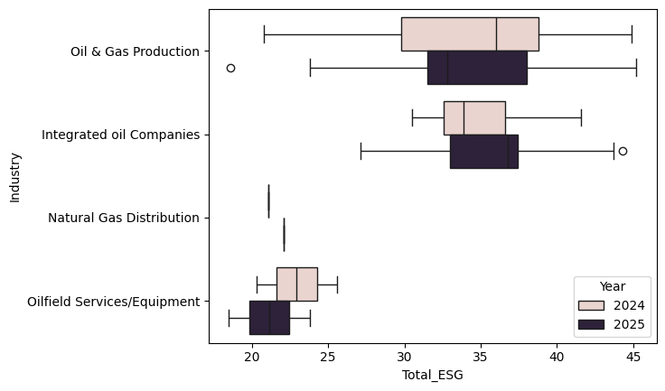

top_5_industries = all_stock_esg['Industry'].value_counts().nlargest(5).indexThe Sustainability of Industries
Research Questions and Why they are Significant:
A few research questions I have included are, - “Do compaines with better esg scores perform better financially?” - “Do companies who improve their esg scores improve their finances?” - “Why do companies have higher esg scores and what are the reasons?” - “How does that change across years?”
These questions are relevant/interesting to me because I would like to see the relationship between how well the comapnies perform compared to how sustainable their company is. I believe their is a pattern with how well companies perform compared to their enviornmental scores. This leads to a problem, if comapanies aren’t sustainable and perform well, they will continue these practices.
Descriptive Statistics/Graphs with Questions
Exploratory Data Analysis with Questions Answered
filtered_df = all_stock_esg[all_stock_esg['Industry'].isin(top_5_industries)]sns.boxplot(data = filtered_df,
y = 'Industry',
x = 'High',
hue = 'Year_x')
sns.boxplot(data = filtered_df,
y = 'Industry',
x = 'Total_ESG',
hue = 'Year_x')
sns.boxplot(data = stock,
y = 'High',
x = 'Low',
hue = 'Date')
- Do compaines with better esg scores perform better financially?
From the two box plots above it compared industry’s highs and their esg scores. When an industry has a higher ESG score it’s high is generally lower comapred to the other industrys. For example major banks industry is low with their highs and their ESG scores are higher then the other industrys. - Do companies who improve their esg scores improve their finances?
There are pros and cons into making your company more sustainable. It may attract more customers with sustainable values and gain more clients, but it also could hurt your company in profits. There is evidence for both correlations.
Exploring Data from 2024-2025 and Questions
import seaborn as sns
import matplotlib.pyplot as plt
import pandassns.countplot(data = delivery_dat,
x = 'Environmental',
hue = 'Year')
sns.boxplot(data = all_esg,
y = 'Sector',
x = 'Total_ESG',
hue = 'Year')
energy = all_esg['Sector'] == "Energy"
energy = all_esg[energy]
sns.boxplot(data = energy,
y = 'Industry',
x = 'Total_ESG',
hue = 'Year')

- Why do companies have higher esg scores and what are the reasons?
Some companies have a higher ESG score then others simplying depending on the industry. Some industries produce a higher carbon footrpint which lowers the score in the environmental section. Also other industrys can be more damaging to the environment when producing their products. Some companies have different values in how they operate which can impact the score as well. - How does that change across years?
In the graph above it shows the ESG rating decreased from 2024-2025 slightly. There could be more regulations added, change in government, and change in clients where this could happen.
Significance of the Project:
- Explain its implications for real-world applications, business strategies, or public policy.
The significance of the project is to understand how companies can change their ESG scores and how it influences their performance. The project collected controversy, esg ratings, and stock data from yahoo finance. After collecting this data we can compare it. There is a neutral conclusion when comparing the two. Some comapnies who have a high all time high in the stocks can also have a high ESG rating. I believe it is how the company is set up and what it’s values are, and the type of client they attract. Higher ESG scores can also lead to performing better long term. There are also conclusions made that increasing the ESG rating can be hard depending where the company is located and it may not be easy to get into a higher ESG rating.
import pandas as pd
import numpy as np
url_2024 = "https://bcdanl.github.io/data/esg_proj_2024_data.csv"
esg_proj_2024_data = pd.read_csv(url_2024)
url_2025 = "https://bcdanl.github.io/data/esg_proj_2025.csv"
esg_proj_2025 = pd.read_csv(url_2025)
esg_2025_dropd = esg_proj_2025.drop_duplicates(subset = ["Name"])
esg_2024_2025 = pd.merge(esg_2025_dropd,esg_proj_2024_data, on = 'Name', how = 'inner')Imported Data from Spyder
df1 = pd.read_csv('data_0_18.csv')
df2 = pd.read_csv('data_18_19.csv')
df3 = pd.read_csv('data_19_56.csv')
df4 = pd.read_csv('data_56_57.csv')
df5 = pd.read_csv('data_57_94.csv')
df6 = pd.read_csv('data_94_95.csv')
df7 = pd.read_csv('data_95_112.csv')
df8 = pd.read_csv('data_112_114.csv')
df9 = pd.read_csv('data_114_346.csv')
df10 = pd.read_csv('data_346_347.csv')
df11 = pd.read_csv('data_347_499.csv')
df12 = pd.read_csv('data_499_551.csv')
df13 = pd.read_csv('data_551_567.csv')
df14 = pd.read_csv('data_567_589.csv')
df15 = pd.read_csv('data_589_590.csv')
df16 = pd.read_csv('data_590_616.csv')
df17 = pd.read_csv('data_616_617.csv')
df18 = pd.read_csv('data_617_625.csv')
cont_1 = df1['Controversy'].to_list()
cont_2 = df2['Controversy'].to_list()
cont_3 = df3['Controversy'].to_list()
cont_4 = df4['Controversy'].to_list()
cont_5 = df5['Controversy'].to_list()
cont_6 = df6['Controversy'].to_list()
cont_7 = df7['Controversy'].to_list()
cont_8 = df8['Controversy'].to_list()
cont_19 = cont_8.append(np.nan)
cont_9 = df9['Controversy'].to_list()
cont_10 = df10['Controversy'].to_list()
cont_11 = df11['Controversy'].to_list()
cont_12 = df12['Controversy'].to_list()
cont_13 = df13['Controversy'].to_list()
cont_14 = df14['Controversy'].to_list()
cont_15 = df15['Controversy'].to_list()
cont_16 = df16['Controversy'].to_list()
cont_17 = df17['Controversy'].to_list()
cont_18 = df18['Controversy'].to_list()
cont = cont_1 + cont_2 + cont_3 + cont_4 + cont_5 + cont_6 + cont_7 + cont_8 + cont_9 + cont_10 + cont_11 + cont_12 + cont_13 + cont_14 + cont_15 + cont_16 + cont_17 + cont_18 #+ cont_19
esg_2024_2025["Controversy"] = contdf1 = pd.read_csv('dat0_187.csv')
df2 = pd.read_csv('dat188_250.csv')
df3 = pd.read_csv('dat250_338.csv')
df4 = pd.read_csv('dat338_401.csv')
df5 = pd.read_csv('dat401_405.csv')
df6 = pd.read_csv('dat405_425.csv')
df7 = pd.read_csv('dat425_512.csv')
df8 = pd.read_csv('dat512_558.csv')
df9 = pd.read_csv('dat558_625.csv')
esg_1 = df1['Total_ESG'].to_list()
esg_2 = df2['Total_ESG'].to_list()
esg_3 = df3['Total_ESG'].to_list()
esg_4 = df4['Total_ESG'].to_list()
esg_5 = df5['Total_ESG'].to_list()
esg_6 = df6['Total_ESG'].to_list()
esg_7 = df7['Total_ESG'].to_list()
esg_8 = df8['Total_ESG'].to_list()
esg_9 = df9['Total_ESG'].to_list()
esg = esg_1 + esg_2 + esg_3 + esg_4 + esg_5 + esg_6 + esg_7 + esg_8 + esg_9
esg_2024_2025["Total_ESG"] = esgdfA = pd.read_csv('dat0_29.csv')
dfB = pd.read_csv('dat29_30.csv')
dfC = pd.read_csv('dat30_78.csv')
dfD = pd.read_csv('dat78_108.csv')
dfE = pd.read_csv('dat108_405.csv')
dfF = pd.read_csv('dat405_432.csv')
dfG = pd.read_csv('dat432_591.csv')
dfH = pd.read_csv('dat591_625.csv')
stock_A = dfA['Stock'].to_list()
stock_B = dfB['Stock'].to_list()
stock_C = dfC['Stock'].to_list()
stock_D = dfD['Stock'].to_list()
stock_E = dfE['Stock'].to_list()
stock_F = dfF['Stock'].to_list()
stock_G = dfG['Stock'].to_list()
stock_H = dfH['Stock'].to_list()
stock = stock_A + stock_B + stock_C + stock_D + stock_E + stock_F + stock_G + stock_H
esg_2024_2025["Total_STOCK"] = stock--------------------------------------------------------------------------- NameError Traceback (most recent call last) <ipython-input-2-3ecc0a4c5eda> in <cell line: 0>() ----> 1 dfA = pd.read_csv('dat0_29.csv') 2 dfB = pd.read_csv('dat29_30.csv') 3 dfC = pd.read_csv('dat30_78.csv') 4 dfD = pd.read_csv('dat78_108.csv') 5 dfE = pd.read_csv('dat108_405.csv') NameError: name 'pd' is not defined
Delivery Data
esg_2024_2025["Total_ESG"] = esg
esg_2024_2025["Controversy"] = cont
delivery_2025 = esg_2024_2025[esg_2024_2025["Industry_x"] == "Air Freight/Delivery Services"]
delivery_2025| Year_x | Symbol_x | Name | Sector_x | Industry_x | Country_x | Market_Cap_x | IPO_Year_x | Year_y | Symbol_y | ... | Industry_y | Country_y | Market_Cap_y | IPO_Year_y | Total_ESG | Environmental | Social | Governance | Controversy | Total_STOCK | |
|---|---|---|---|---|---|---|---|---|---|---|---|---|---|---|---|---|---|---|---|---|---|
| 2 | 2025 | AAL | American Airlines Group Inc. Common Stock | Consumer Discretionary | Air Freight/Delivery Services | United States | 7.325392e+09 | NaN | 2024 | AAL | ... | Air Freight/Delivery Services | United States | 9088024606 | NaN | 23.8 | 9.9 | 11.6 | 4.8 | 2.0 | Mar 31, 2025 10.41 10.68 10.06 10.55 10.55 66,... |
| 161 | 2025 | DAL | Delta Air Lines Inc. Common Stock | Consumer Discretionary | Air Freight/Delivery Services | United States | 2.981115e+10 | NaN | 2024 | DAL | ... | Air Freight/Delivery Services | United States | 32213989167 | NaN | 30.5 | 9.9 | 14.6 | 5.8 | 2.0 | Mar 31, 2025 42.00 44.01 40.78 43.60 43.60 18,... |
| 222 | 2025 | FDX | FedEx Corporation Common Stock | Consumer Discretionary | Air Freight/Delivery Services | United States | 5.844297e+10 | NaN | 2024 | FDX | ... | Air Freight/Delivery Services | United States | 65418106580 | NaN | 19.1 | 5.7 | 8.4 | 5.6 | 2.0 | Mar 31, 2025 239.81 245.44 239.25 243.78 243.7... |
| 349 | 2025 | LUV | Southwest Airlines Company Common Stock | Consumer Discretionary | Air Freight/Delivery Services | United States | 2.010899e+10 | NaN | 2024 | LUV | ... | Air Freight/Delivery Services | United States | 16127842057 | NaN | 28.6 | 11.0 | 13.7 | 5.9 | 2.0 | Mar 31, 2025 32.90 33.89 32.77 33.58 33.58 10,... |
| 568 | 2025 | UAL | United Airlines Holdings Inc. Common Stock | Consumer Discretionary | Air Freight/Delivery Services | United States | 2.406928e+10 | NaN | 2024 | UAL | ... | Air Freight/Delivery Services | United States | 17373973294 | NaN | 27.0 | 10.8 | 12.8 | 5.0 | 2.0 | Mar 31, 2025 66.97 69.72 64.11 69.05 69.05 10,... |
5 rows × 21 columns
delivery_2025 = (
delivery_2025
.drop(columns=['Year_y','Symbol_y','Industry_y','Country_y','Market_Cap_y','IPO_Year_y','Sector_y'])
)
delivery_2025| Year_x | Symbol_x | Name | Sector_x | Industry_x | Country_x | Market_Cap_x | IPO_Year_x | Total_ESG | Environmental | Social | Governance | Controversy | Total_STOCK | |
|---|---|---|---|---|---|---|---|---|---|---|---|---|---|---|
| 2 | 2025 | AAL | American Airlines Group Inc. Common Stock | Consumer Discretionary | Air Freight/Delivery Services | United States | 7.325392e+09 | NaN | 23.8 | 9.9 | 11.6 | 4.8 | 2.0 | Mar 31, 2025 10.41 10.68 10.06 10.55 10.55 66,... |
| 161 | 2025 | DAL | Delta Air Lines Inc. Common Stock | Consumer Discretionary | Air Freight/Delivery Services | United States | 2.981115e+10 | NaN | 30.5 | 9.9 | 14.6 | 5.8 | 2.0 | Mar 31, 2025 42.00 44.01 40.78 43.60 43.60 18,... |
| 222 | 2025 | FDX | FedEx Corporation Common Stock | Consumer Discretionary | Air Freight/Delivery Services | United States | 5.844297e+10 | NaN | 19.1 | 5.7 | 8.4 | 5.6 | 2.0 | Mar 31, 2025 239.81 245.44 239.25 243.78 243.7... |
| 349 | 2025 | LUV | Southwest Airlines Company Common Stock | Consumer Discretionary | Air Freight/Delivery Services | United States | 2.010899e+10 | NaN | 28.6 | 11.0 | 13.7 | 5.9 | 2.0 | Mar 31, 2025 32.90 33.89 32.77 33.58 33.58 10,... |
| 568 | 2025 | UAL | United Airlines Holdings Inc. Common Stock | Consumer Discretionary | Air Freight/Delivery Services | United States | 2.406928e+10 | NaN | 27.0 | 10.8 | 12.8 | 5.0 | 2.0 | Mar 31, 2025 66.97 69.72 64.11 69.05 69.05 10,... |
delivery_2025.columns = ['Year','Symbol','Name','Sector','Industry','Country','Market_Cap', 'IPO_Year', 'Total_ESG','Environmental','Social', 'Governance', 'Controversy', 'Total_STOCK']
delivery_2025
| Year | Symbol | Name | Sector | Industry | Country | Market_Cap | IPO_Year | Total_ESG | Environmental | Social | Governance | Controversy | Total_STOCK | |
|---|---|---|---|---|---|---|---|---|---|---|---|---|---|---|
| 2 | 2025 | AAL | American Airlines Group Inc. Common Stock | Consumer Discretionary | Air Freight/Delivery Services | United States | 7.325392e+09 | NaN | 23.8 | 9.9 | 11.6 | 4.8 | 2.0 | Mar 31, 2025 10.41 10.68 10.06 10.55 10.55 66,... |
| 161 | 2025 | DAL | Delta Air Lines Inc. Common Stock | Consumer Discretionary | Air Freight/Delivery Services | United States | 2.981115e+10 | NaN | 30.5 | 9.9 | 14.6 | 5.8 | 2.0 | Mar 31, 2025 42.00 44.01 40.78 43.60 43.60 18,... |
| 222 | 2025 | FDX | FedEx Corporation Common Stock | Consumer Discretionary | Air Freight/Delivery Services | United States | 5.844297e+10 | NaN | 19.1 | 5.7 | 8.4 | 5.6 | 2.0 | Mar 31, 2025 239.81 245.44 239.25 243.78 243.7... |
| 349 | 2025 | LUV | Southwest Airlines Company Common Stock | Consumer Discretionary | Air Freight/Delivery Services | United States | 2.010899e+10 | NaN | 28.6 | 11.0 | 13.7 | 5.9 | 2.0 | Mar 31, 2025 32.90 33.89 32.77 33.58 33.58 10,... |
| 568 | 2025 | UAL | United Airlines Holdings Inc. Common Stock | Consumer Discretionary | Air Freight/Delivery Services | United States | 2.406928e+10 | NaN | 27.0 | 10.8 | 12.8 | 5.0 | 2.0 | Mar 31, 2025 66.97 69.72 64.11 69.05 69.05 10,... |
delivery_2024 = esg_proj_2024_data[esg_proj_2024_data["Industry"] == "Air Freight/Delivery Services"]
delivery_2024| Year | Symbol | Name | Sector | Industry | Country | Market_Cap | IPO_Year | Total_ESG | Environmental | Social | Governance | Controversy | |
|---|---|---|---|---|---|---|---|---|---|---|---|---|---|
| 2 | 2024 | AAL | American Airlines Group Inc. Common Stock | Consumer Discretionary | Air Freight/Delivery Services | United States | 9088024606 | NaN | 26.4 | 9.9 | 11.6 | 4.8 | 2.0 |
| 161 | 2024 | DAL | Delta Air Lines Inc. Common Stock | Consumer Discretionary | Air Freight/Delivery Services | United States | 32213989167 | NaN | 30.3 | 9.9 | 14.6 | 5.8 | 2.0 |
| 222 | 2024 | FDX | FedEx Corporation Common Stock | Consumer Discretionary | Air Freight/Delivery Services | United States | 65418106580 | NaN | 19.7 | 5.7 | 8.4 | 5.6 | 2.0 |
| 349 | 2024 | LUV | Southwest Airlines Company Common Stock | Consumer Discretionary | Air Freight/Delivery Services | United States | 16127842057 | NaN | 30.7 | 11.0 | 13.7 | 5.9 | 2.0 |
| 568 | 2024 | UAL | United Airlines Holdings Inc. Common Stock | Consumer Discretionary | Air Freight/Delivery Services | United States | 17373973294 | NaN | 28.6 | 10.8 | 12.8 | 5.0 | 2.0 |
delivery_dat = pd.merge(delivery_2024, delivery_2025, on = ["Year", "Symbol", "Name", "Sector", "Industry", "Country", "Market_Cap", "IPO_Year", "Total_ESG", "Environmental", "Social", "Governance", "Controversy"], how = "outer")
delivery_dat| Year | Symbol | Name | Sector | Industry | Country | Market_Cap | IPO_Year | Total_ESG | Environmental | Social | Governance | Controversy | Total_STOCK | |
|---|---|---|---|---|---|---|---|---|---|---|---|---|---|---|
| 0 | 2024 | AAL | American Airlines Group Inc. Common Stock | Consumer Discretionary | Air Freight/Delivery Services | United States | 9.088025e+09 | NaN | 26.4 | 9.9 | 11.6 | 4.8 | 2.0 | NaN |
| 1 | 2024 | DAL | Delta Air Lines Inc. Common Stock | Consumer Discretionary | Air Freight/Delivery Services | United States | 3.221399e+10 | NaN | 30.3 | 9.9 | 14.6 | 5.8 | 2.0 | NaN |
| 2 | 2024 | FDX | FedEx Corporation Common Stock | Consumer Discretionary | Air Freight/Delivery Services | United States | 6.541811e+10 | NaN | 19.7 | 5.7 | 8.4 | 5.6 | 2.0 | NaN |
| 3 | 2024 | LUV | Southwest Airlines Company Common Stock | Consumer Discretionary | Air Freight/Delivery Services | United States | 1.612784e+10 | NaN | 30.7 | 11.0 | 13.7 | 5.9 | 2.0 | NaN |
| 4 | 2024 | UAL | United Airlines Holdings Inc. Common Stock | Consumer Discretionary | Air Freight/Delivery Services | United States | 1.737397e+10 | NaN | 28.6 | 10.8 | 12.8 | 5.0 | 2.0 | NaN |
| 5 | 2025 | AAL | American Airlines Group Inc. Common Stock | Consumer Discretionary | Air Freight/Delivery Services | United States | 7.325392e+09 | NaN | 23.8 | 9.9 | 11.6 | 4.8 | 2.0 | Mar 31, 2025 10.41 10.68 10.06 10.55 10.55 66,... |
| 6 | 2025 | DAL | Delta Air Lines Inc. Common Stock | Consumer Discretionary | Air Freight/Delivery Services | United States | 2.981115e+10 | NaN | 30.5 | 9.9 | 14.6 | 5.8 | 2.0 | Mar 31, 2025 42.00 44.01 40.78 43.60 43.60 18,... |
| 7 | 2025 | FDX | FedEx Corporation Common Stock | Consumer Discretionary | Air Freight/Delivery Services | United States | 5.844297e+10 | NaN | 19.1 | 5.7 | 8.4 | 5.6 | 2.0 | Mar 31, 2025 239.81 245.44 239.25 243.78 243.7... |
| 8 | 2025 | LUV | Southwest Airlines Company Common Stock | Consumer Discretionary | Air Freight/Delivery Services | United States | 2.010899e+10 | NaN | 28.6 | 11.0 | 13.7 | 5.9 | 2.0 | Mar 31, 2025 32.90 33.89 32.77 33.58 33.58 10,... |
| 9 | 2025 | UAL | United Airlines Holdings Inc. Common Stock | Consumer Discretionary | Air Freight/Delivery Services | United States | 2.406928e+10 | NaN | 27.0 | 10.8 | 12.8 | 5.0 | 2.0 | Mar 31, 2025 66.97 69.72 64.11 69.05 69.05 10,... |
New ESG_all Data
esg_2025 = esg_2024_2025.drop(columns = ["Year_y", "Symbol_y", "Sector_y", "Industry_y", "Country_y", "Market_Cap_y", "IPO_Year_y","Total_STOCK"])
esg_2025.columns = ["Year", "Symbol", "Name", "Sector", "Industry", "Country", "Market_Cap", "IPO_Year", "Total_ESG", "Environmental", "Social", "Governance", "Controversy"]
all_esg = pd.merge(esg_proj_2024_data, esg_2025, on = ["Year", "Symbol", "Name", "Sector", "Industry", "Country", "Market_Cap", "IPO_Year", "Total_ESG", "Environmental", "Social", "Governance", "Controversy"], how = "outer")
all_esg| Year | Symbol | Name | Sector | Industry | Country | Market_Cap | IPO_Year | Total_ESG | Environmental | Social | Governance | Controversy | |
|---|---|---|---|---|---|---|---|---|---|---|---|---|---|
| 0 | 2024 | A | Agilent Technologies Inc. Common Stock | Industrials | Biotechnology: Laboratory Analytical Instruments | United States | 4.036543e+10 | 1999.0 | 13.6 | 1.1 | 6.4 | 6.1 | 2.0 |
| 1 | 2024 | AA | Alcoa Corporation Common Stock | Industrials | Aluminum | United States | 6.622136e+09 | 2016.0 | 24.0 | 13.8 | 5.9 | 4.3 | 3.0 |
| 2 | 2024 | AAL | American Airlines Group Inc. Common Stock | Consumer Discretionary | Air Freight/Delivery Services | United States | 9.088025e+09 | NaN | 26.4 | 9.9 | 11.6 | 4.8 | 2.0 |
| 3 | 2024 | AAP | Advance Auto Parts Inc. | Consumer Discretionary | Auto & Home Supply Stores | United States | 4.474665e+09 | NaN | 11.5 | 0.1 | 8.3 | 3.1 | 2.0 |
| 4 | 2024 | AAPL | Apple Inc. Common Stock | Technology | Computer Manufacturing | United States | 2.614310e+12 | 1980.0 | 17.2 | 0.5 | 7.4 | 9.4 | 3.0 |
| ... | ... | ... | ... | ... | ... | ... | ... | ... | ... | ... | ... | ... | ... |
| 1245 | 2025 | XYL | Xylem Inc. Common Stock New | Industrials | Fluid Controls | United States | 2.965650e+10 | 2011.0 | 22.9 | 4.3 | 8.7 | 5.2 | 1.0 |
| 1246 | 2025 | YUM | Yum! Brands Inc. | Consumer Discretionary | Restaurants | United States | 4.400042e+10 | NaN | 20.5 | 4.5 | 11.4 | 4.1 | 2.0 |
| 1247 | 2025 | Z | Zillow Group Inc. Class C Capital Stock | Consumer Discretionary | Business Services | United States | 1.706396e+10 | NaN | 17.8 | 1.2 | 11.5 | 9.5 | 2.0 |
| 1248 | 2025 | ZBH | Zimmer Biomet Holdings Inc. Common Stock | Health Care | Industrial Specialties | United States | 2.232493e+10 | NaN | 26.2 | 3.6 | 14.5 | 7.9 | 2.0 |
| 1249 | 2025 | ZTS | Zoetis Inc. Class A Common Stock | Health Care | Biotechnology: Pharmaceutical Preparations | United States | 7.389462e+10 | 2013.0 | 15.1 | 3.2 | 6.8 | 8.7 | 2.0 |
1250 rows × 13 columns
Stock 2023 data
url = "https://bcdanl.github.io/data/stock_history_2023.csv"
stock_history_2023 = pd.read_csv(url)
url = "https://bcdanl.github.io/data/stock_history_2023.csv"
stock_history_2023| Date | Year | Symbol | Open | High | Low | Close | Volume | Dividend | Stock_Splits | |
|---|---|---|---|---|---|---|---|---|---|---|
| 0 | 2023-12-29 | 2023 | A | 138.587233 | 139.215036 | 137.879691 | 138.547363 | 1014400 | 0.236 | 0.0 |
| 1 | 2023-12-28 | 2023 | A | 139.815657 | 140.084270 | 138.930245 | 139.049637 | 892600 | 0.000 | 0.0 |
| 2 | 2023-12-27 | 2023 | A | 139.059578 | 139.437624 | 138.363189 | 139.099380 | 1182300 | 0.000 | 0.0 |
| 3 | 2023-12-26 | 2023 | A | 138.591994 | 139.746018 | 138.373126 | 139.089416 | 948400 | 0.000 | 0.0 |
| 4 | 2023-12-22 | 2023 | A | 138.890449 | 139.636584 | 138.074668 | 138.850662 | 1204100 | 0.000 | 0.0 |
| ... | ... | ... | ... | ... | ... | ... | ... | ... | ... | ... |
| 157745 | 2023-01-09 | 2023 | ZTS | 146.205080 | 146.715330 | 144.242596 | 144.301468 | 1700500 | 0.000 | 0.0 |
| 157746 | 2023-01-06 | 2023 | ZTS | 143.840283 | 145.832203 | 138.865393 | 144.870590 | 1761200 | 0.000 | 0.0 |
| 157747 | 2023-01-05 | 2023 | ZTS | 144.586064 | 145.400482 | 141.563836 | 142.721695 | 1560900 | 0.000 | 0.0 |
| 157748 | 2023-01-04 | 2023 | ZTS | 146.224720 | 147.981137 | 145.184606 | 146.165848 | 1796100 | 0.000 | 0.0 |
| 157749 | 2023-01-03 | 2023 | ZTS | 145.871459 | 145.999010 | 142.486177 | 144.095413 | 1840600 | 0.000 | 0.0 |
157750 rows × 10 columns
import pandas as pdstock = pd.DataFrame(stock)
stock[0]
stock.columns = ['Info']
stock[['Date', 'Open', 'High', 'Low', 'Close', 'Adj_close']] = stock['Info'].str.extract(r'(\w+ \d+, \d+) (\d+\.\d+) (\d+\.\d+) (\d+\.\d+) (\d+\.\d+) (\d+\.\d+)')
stock| Info | Date | Open | High | Low | Close | Adj_close | |
|---|---|---|---|---|---|---|---|
| 0 | Mar 31, 2025 116.36 117.73 113.76 116.98 116.7... | Mar 31, 2025 | 116.36 | 117.73 | 113.76 | 116.98 | 116.73 |
| 1 | Mar 31, 2025 29.74 30.63 28.80 30.50 30.50 4,9... | Mar 31, 2025 | 29.74 | 30.63 | 28.80 | 30.50 | 30.50 |
| 2 | Mar 31, 2025 10.41 10.68 10.06 10.55 10.55 66,... | Mar 31, 2025 | 10.41 | 10.68 | 10.06 | 10.55 | 10.55 |
| 3 | Mar 31, 2025 38.36 39.65 38.25 39.21 38.91 2,3... | Mar 31, 2025 | 38.36 | 39.65 | 38.25 | 39.21 | 38.91 |
| 4 | Mar 31, 2025 217.01 225.62 216.23 222.13 222.1... | Mar 31, 2025 | 217.01 | 225.62 | 216.23 | 222.13 | 222.13 |
| ... | ... | ... | ... | ... | ... | ... | ... |
| 620 | Mar 31, 2025 118.64 120.11 116.52 119.46 119.4... | Mar 31, 2025 | 118.64 | 120.11 | 116.52 | 119.46 | 119.46 |
| 621 | Mar 31, 2025 154.18 158.14 153.61 157.36 157.3... | Mar 31, 2025 | 154.18 | 158.14 | 153.61 | 157.36 | 157.36 |
| 622 | Mar 31, 2025 67.54 68.90 66.13 68.56 68.56 2,3... | Mar 31, 2025 | 67.54 | 68.90 | 66.13 | 68.56 | 68.56 |
| 623 | Mar 31, 2025 111.37 113.64 111.37 113.18 113.1... | Mar 31, 2025 | 111.37 | 113.64 | 111.37 | 113.18 | 113.18 |
| 624 | Mar 31, 2025 163.12 164.90 161.58 164.65 164.1... | Mar 31, 2025 | 163.12 | 164.90 | 161.58 | 164.65 | 164.10 |
625 rows × 7 columns
all_stock_esg = pd.merge(stock_history_2023, all_esg, on = ['Symbol'])
all_stock_esg| Date | Year_x | Symbol | Open | High | Low | Close | Volume | Dividend | Stock_Splits | ... | Sector | Industry | Country | Market_Cap | IPO_Year | Total_ESG | Environmental | Social | Governance | Controversy | |
|---|---|---|---|---|---|---|---|---|---|---|---|---|---|---|---|---|---|---|---|---|---|
| 0 | 2023-12-29 | 2023 | A | 138.587233 | 139.215036 | 137.879691 | 138.547363 | 1014400 | 0.236 | 0.0 | ... | Industrials | Biotechnology: Laboratory Analytical Instruments | United States | 4.036543e+10 | 1999.0 | 13.6 | 1.1 | 6.4 | 6.1 | 2.0 |
| 1 | 2023-12-29 | 2023 | A | 138.587233 | 139.215036 | 137.879691 | 138.547363 | 1014400 | 0.236 | 0.0 | ... | Industrials | Biotechnology: Laboratory Analytical Instruments | United States | 3.391867e+10 | 1999.0 | 10.1 | 1.1 | 6.4 | 6.1 | 1.0 |
| 2 | 2023-12-28 | 2023 | A | 139.815657 | 140.084270 | 138.930245 | 139.049637 | 892600 | 0.000 | 0.0 | ... | Industrials | Biotechnology: Laboratory Analytical Instruments | United States | 4.036543e+10 | 1999.0 | 13.6 | 1.1 | 6.4 | 6.1 | 2.0 |
| 3 | 2023-12-28 | 2023 | A | 139.815657 | 140.084270 | 138.930245 | 139.049637 | 892600 | 0.000 | 0.0 | ... | Industrials | Biotechnology: Laboratory Analytical Instruments | United States | 3.391867e+10 | 1999.0 | 10.1 | 1.1 | 6.4 | 6.1 | 1.0 |
| 4 | 2023-12-27 | 2023 | A | 139.059578 | 139.437624 | 138.363189 | 139.099380 | 1182300 | 0.000 | 0.0 | ... | Industrials | Biotechnology: Laboratory Analytical Instruments | United States | 4.036543e+10 | 1999.0 | 13.6 | 1.1 | 6.4 | 6.1 | 2.0 |
| ... | ... | ... | ... | ... | ... | ... | ... | ... | ... | ... | ... | ... | ... | ... | ... | ... | ... | ... | ... | ... | ... |
| 312495 | 2023-01-05 | 2023 | ZTS | 144.586064 | 145.400482 | 141.563836 | 142.721695 | 1560900 | 0.000 | 0.0 | ... | Health Care | Biotechnology: Pharmaceutical Preparations | United States | 7.389462e+10 | 2013.0 | 15.1 | 3.2 | 6.8 | 8.7 | 2.0 |
| 312496 | 2023-01-04 | 2023 | ZTS | 146.224720 | 147.981137 | 145.184606 | 146.165848 | 1796100 | 0.000 | 0.0 | ... | Health Care | Biotechnology: Pharmaceutical Preparations | United States | 7.253531e+10 | 2013.0 | 18.8 | 3.2 | 6.8 | 8.7 | 2.0 |
| 312497 | 2023-01-04 | 2023 | ZTS | 146.224720 | 147.981137 | 145.184606 | 146.165848 | 1796100 | 0.000 | 0.0 | ... | Health Care | Biotechnology: Pharmaceutical Preparations | United States | 7.389462e+10 | 2013.0 | 15.1 | 3.2 | 6.8 | 8.7 | 2.0 |
| 312498 | 2023-01-03 | 2023 | ZTS | 145.871459 | 145.999010 | 142.486177 | 144.095413 | 1840600 | 0.000 | 0.0 | ... | Health Care | Biotechnology: Pharmaceutical Preparations | United States | 7.253531e+10 | 2013.0 | 18.8 | 3.2 | 6.8 | 8.7 | 2.0 |
| 312499 | 2023-01-03 | 2023 | ZTS | 145.871459 | 145.999010 | 142.486177 | 144.095413 | 1840600 | 0.000 | 0.0 | ... | Health Care | Biotechnology: Pharmaceutical Preparations | United States | 7.389462e+10 | 2013.0 | 15.1 | 3.2 | 6.8 | 8.7 | 2.0 |
312500 rows × 22 columns